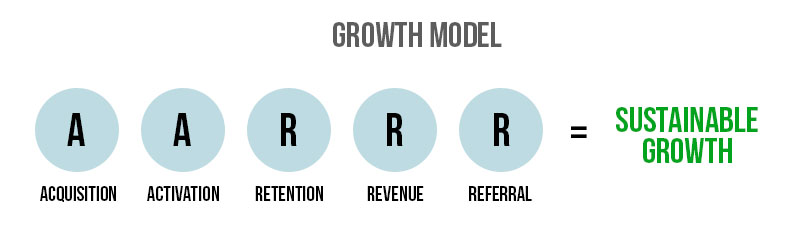

Achieving Sustainable Growth
All small startups and companies want to keep growing, this gaining more revenue. To achieve this you want to use a growth machine. Like any machine you use inputs to get to your desired outputs. All the inputs however are geared towards growth.
Step 1 - Create a Goal
You need to select the metric that matters most to your startup currently. This is the measure that honestly and accurately reflects your startups success to all your employees. Once your team is all focused on one metric decision-making process speeds up which in turn makes your work more efficient. Depending on the type of business your run, you will focus on a specific metric. Your metric needs to be actionable, accessible and auditable. Often it is best to focus on growth rates.
Once you have identifies the metric you wish to focus on, translate it into a goal for your business.
Step 2 - Impacting Factors
Now you need to identify the different factors that will impact your focus metric. The factors along the customer life cycle will have an impact on your metric. These factors are acquisition, activation, retention, revenue and referral.
You can take these factors are formulate ideas for each one that will contribute to your businesses growth. By creating repeatable growth tactics for each factor you will start to grow your overall business. Just be sure to keep testing which factors are most important and resulting in the most growth.
Step 3 - Implementation
In this step you take your most important metric (step1), growth model (step 2) and your ideas and start to test and find the successful results. Firstly you will need to brainstorm and formulate ideas. Focus on each factor and identify where it needs improvement. Remember to keep a record of all your ideas for later. Once you have come up with a bunch of ideas you need to work out which to test first. For each idea you need to look at three things. What impact the idea will have on your focus metric, your confidence in the idea succeeding and how easily you can implement the idea. By using a scale of 1-10 for the above three questions you can compare the different ideas. Now you can begin the testing process. Make sure you first record a clear and structured outline of your experiment. Include your hypothesis, test design and required resources in this. Once you have recorded your results you can analyze the tests success. You will need to focus on the impact and accuracy of the test. Now you can begin to understand why you saw the results you did.
Finally you can either implement the successful test directly into your product or company. Alternatively record the successful tests and start to build up a record of growth tactics you will implement in the near future.
Step 4 - Review
Meet with your team once a week to make sure everyone is still focused on the growth metric you chose and your end goal. Team members can learn from each other’s successes and failures to make the testing process more efficient. As you perform more tests you will need to relook at your focus metrics and the main influencing factors.
Each quarter you will need to review your important metrics and check your growth machine is producing the growth rate you desire. You can focus on the ratio of successful tests to failures, the accuracy of your hypotheses, the number of tests you are running and where there is opportunities to increase that number and quality.